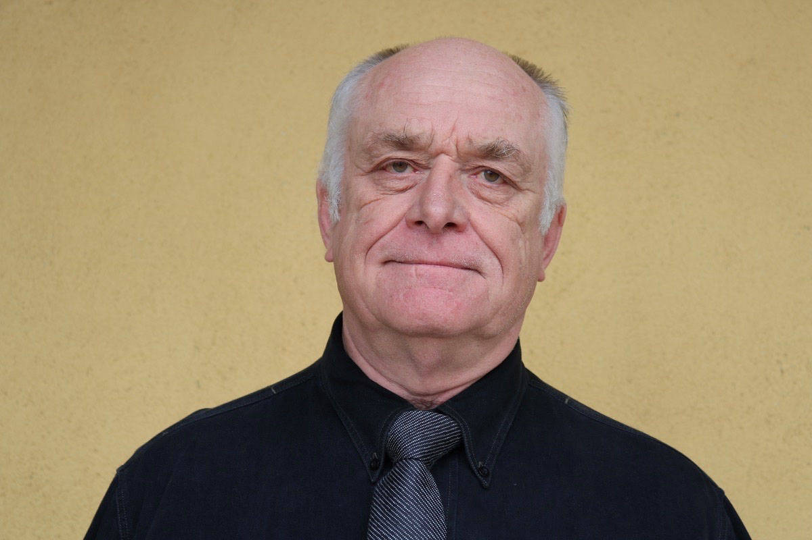

Сэнди Дуглас
Александр Shafto «Сэнди» Дуглас CBE - британский профессор компьютерных наук.
Александр Shafto «Сэнди» Дуглас CBE (21 мая 1921 - 29 апреля 2010) был британский профессор компьютерных наук , приписывают создание первого графического компьютерной игры "ОХО" , крестики и нолики компьютерных игр в 1952 году на EDSAC компьютере в Кембриджском университете.
Он писал диссертацию на тему «Взаимодействие человека и компьютера», и чтобы доказать на практике свои теории он разработал алгоритм и код для игры где человек сможет конкурировать с компьютером. На тот момент в мире было всего два компьютера и один из них EDSAC находился в подземной лаборатории Кембриджа. Именно на нем и была запущена первая компьютерная игра.
Дуглас учился в Кембриджском университете в 1950 году. В 1952 году, работая над докторской степенью, он написал диссертацию, посвященную взаимодействию человека и компьютера, и ему нужен был пример для подтверждения своих теорий. В то время в Кембридже находился второй компьютер с хранимой программой , EDSAC или автоматический калькулятор с электронным запоминающим устройством (первым из которых был « Малыш » Манчестерского университета , который запустил свою первую программу 21 июня 1948 года). Это дало Дугласу возможность доказать свои открытия, запрограммировав код для простой игры, в которой игрок может соревноваться с компьютером, "OXO" .